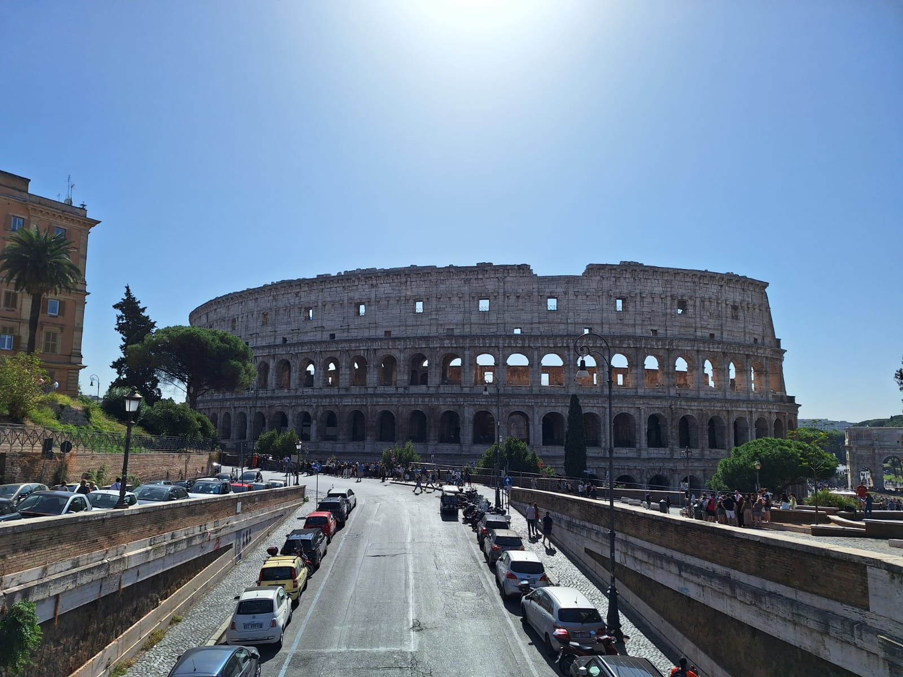
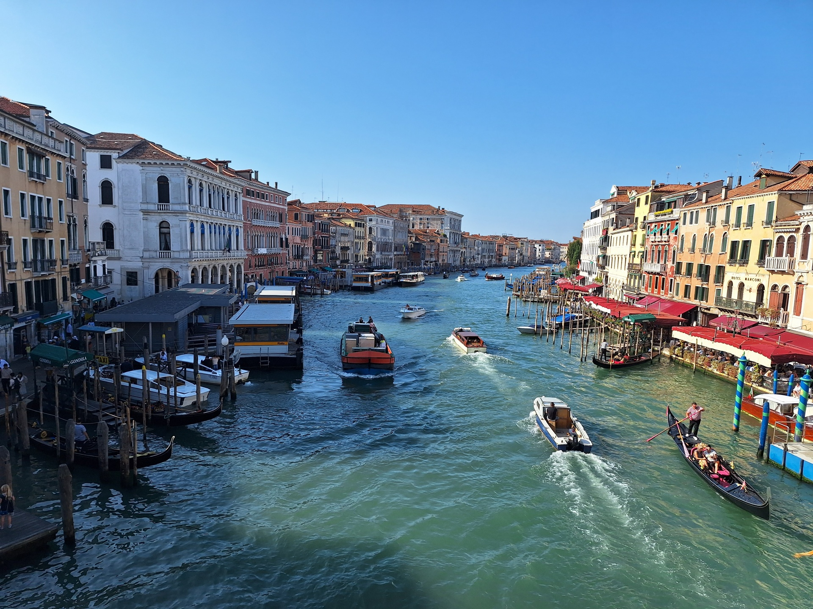
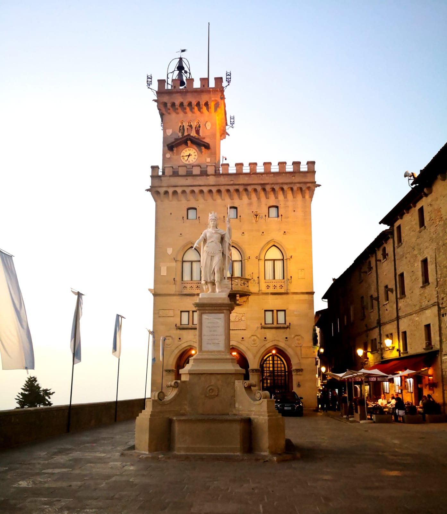
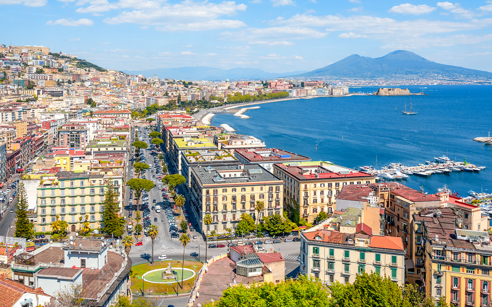
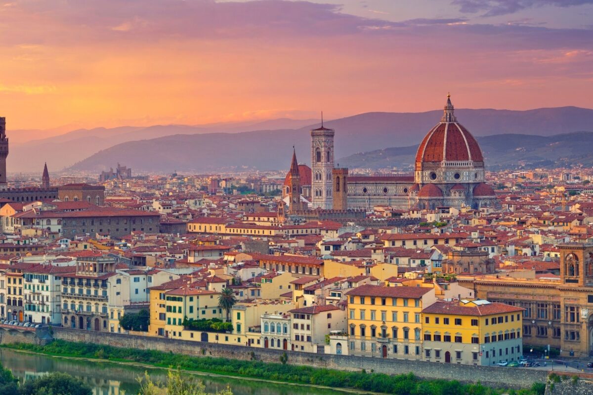
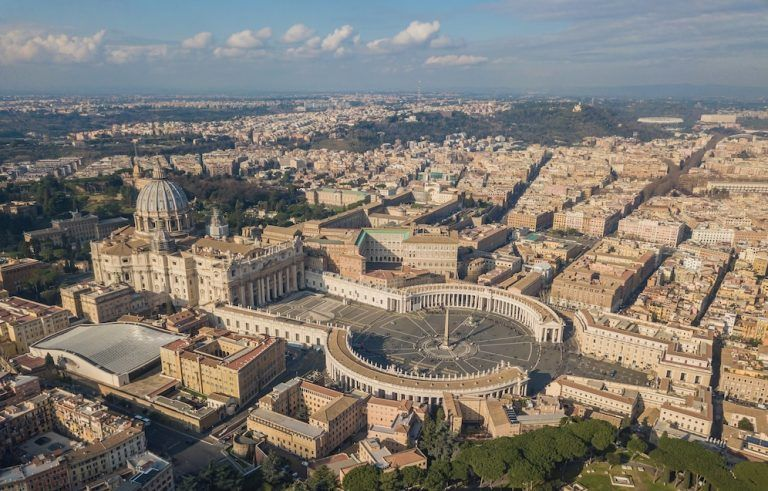

ROMA ---- CAPITALA ITALIEI,LOCUL DE NASTERE A IMPERIULUI ROMAN ȘI A UNEI ISTORII FASCINANTE

Roma este capitala Italiei. Situat pe malul fluviului Tibru, orașul are o istorie îndelungată, fiind de-a lungul secolelor capitala Republicii Romane, a Imperiului Roman, a Bisericii Romano-Catolice și a Italiei moderne. Roma este un important centru turistic. Printre monumentele cele mai faimoase se numără Colosseumul și Columna lui Traian. Roma este profund modernă și cosmopolită. Ca unul dintre puținele orașe mari ale Europei care a supraviețuit celui de-al Doilea Război Mondial relativ puțin afectat, centrul Romei rămâne renascentist și baroc în esența sa. Centrul Istoric al Romei este pe lista patrimoniului mondial UNESCO.
VENEȚIA ---- ORAȘUL FAIMOS PENTRU CANALELE SALE,GONDOLE SI ATMOSFERA ROMANTICA

Veneția este principalul oraș al regiunii Veneto și al Italiei nord-orientale. Veneția este capitala provinciei cu același nume și număra 249.643 locuitori. Întregul oraș a fost declarat în 1979 patrimoniu al umanității de către UNESCO.
SAN MARINO ---- MICROSTATUL FERMECĂTOR PRIN ATMOSFERA SA MEDIEVALĂ SI PEISAJUL UIMITOR

San Marino este un microstat-enclavă înconjurat de Italia, situat pe Peninsula Italică pe versantul de nord-est al Munților Apenini. Teritoriul are o întindere de puțin peste 61 km², cu o populație de 33.562 de locuitori. San Marino are cea mai mică populație din toți membrii Consiliului Europei. Faptul că limba oficială este italiana, împreună cu puternicele legături financiare și etno-culturale, face ca San Marino să mențină legături strânse cu vecinul mult mai mare; este situat în apropiere de riviera din Rimini, una din principalele zone turistice litorale italiene.
NAPOLI ---- UN ORAȘ CROMATIC LÂNGĂ VULCANUL VEZUVIU. UN LOC BOGAT IN ISTORIE SI PIZZA

Napoli este cel mai mare oraș din Italia de Sud și al treilea oraș din Italia. Este una dintre capitalele regionale și are o populație de 913.462 locuitori,împreună cu zona metropolitană are o populație de 3.034.410 de locuitori. Este reședința regiunii Campania și a provinciei Napoli și un centru economic și cultural important din sudul Italiei. Se află la mijlocul distanței dintre Vezuviu și zona vulcanică Campi Flegrei. Centrul vechi istoric din Napoli a fost înscris în anul 1995 pe lista patrimoniului cultural mondial UNESCO.
FLORENȚA ---- INIMA RENASCENTISMULUI,CUNOSCUT PENTRU ARTĂ,ARHITECTURĂ,MUZEE SI PODURI FRUMOASE

Florența este capitala regiunii italiene Toscana și a provinciei Florența. Este cel mai populat oraș din Toscana, cu o populație de 367.569 de locuitori (1.500.000 în zona metropolitană). Centrul istoric al Florenței atrage anual milioane de turiști și a fost declarat de UNESCO Patrimoniu mondial în 1982. Florența este unul din cele mai frumoase orașe din lume, cu o istorie și cultură remarcabilă. Centrul istoric din Florența este alcătuit din numeroase piețe elegante, palate renascentiste, academii, parcuri, grădini, biserici, mănăstiri, muzee, galerii de artă și ateliere. Orașul este una din cele mai căutate destinații turistice din lume.
POMPEII ---- UN ANTIC ORAȘ ROMAN,DISTRUS DE VULCANUL VEZUVIU,DAR PREZERVAT DE TIMP

Pompeii a fost un oraș roman în apropierea orașului Napoli, în regiunea Campania din Italia. Orașul Pompei, situat în Golful Napoli, pe țărmul vestic al Peninsulei Italice, a fost inițial o colonie doriană din secolul VI Î.Hr. În anul 80 Î.Hr. a devenit colonie romană, sub numele de Cornelia Veneria Pompeianorum. Istoria orașului a luat sfârșit în ziua de 24 august anului 79 d. Hr. când o erupție a vulcanului Vezuviu din apropiere l-a acoperit în întregime. O mărturie din acea epocă ni s-a păstrat într-o scrisoare a lui Pliniu cel Tânăr, nepotul lui Pliniu cel Bătrân, acesta din urmă fiind una dintre miile de victime ale dezastrului. Nepotul său, Pliniu cel Tânăr, pe atunci în vârstă de 17 ani, avea să noteze, că norul semăna cu un pin, care se înălța până foarte sus și apoi se răspândea spre vârf, ca și cum ar fi avut ramuri. Azi, Pompeiul este dovada pentru o viată prosperă și lipsită de griji a locuitorilor unei bogate colonii romane, curmată dramatic de un cumplit cataclism.
VATICAN ---- INIMA CATOLICISMULUI,FAIMOS PRIN ARHITECTURĂ ȘI ARTĂ

Vatican este un mic stat suveran al cărui teritoriu constă dintr-o enclavă în orașul Roma, Italia. Întreaga țară este de aproximativ jumătate de kilometru pătrat. Statul este condus de către episcopul Romei, Papa, și astfel poate fi considerat un stat ecleziastic în care funcțiile înalte sunt ocupate de către clerici. În zilele noastre, Vaticanul este cel mai mic stat independent din punct de vedere al suprafeței și al numărului de locuitori. Este reședința teritorială a Sfântului Scaun, entitatea instituțională reprezentată de către Papă, episcopul Romei și prin urmare principala reședință ecleziastică a Bisericii Catolice. Întreg teritoriul statului Vatican a fost înscris, în anul 1984, pe lista patrimoniului cultural mondial UNESCO.